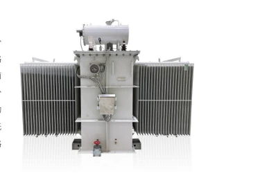

Branch and fault coordination
The separately connected branches help contain the effect of a fault on the other branch. The final impedance and protection study must reflect the actual network.
Split low-voltage windings · oil-immersed power
A split-winding transformer divides the low-voltage winding into separately connected branches with weak magnetic coupling. The arrangement is used where large auxiliary or industrial loads require two output circuits and short-circuit current coordination.

Technical data
The catalog describes a specific SZ-50000/110 transformer. These figures illustrate one engineered design and are not fixed ratings for the complete product family.
Contract example · values vary with the approved project design
Engineering considerations
The separately connected branches help contain the effect of a fault on the other branch. The final impedance and protection study must reflect the actual network.
The source describes radial and axial splitting. The selected arrangement depends on capacity, physical layout and the required impedance relationship.
The catalog identifies through, half-through and split operation. Specify expected loading on each branch and contingency operation before design approval.
Applications
Catalog basis
Catalog reference: Tianyu Electric Integrated Catalog, 2026-05-19, printed pp. 15–16.
For an order, request the selected model datasheet, guaranteed performance schedule and approved drawings.
Technical inquiry
Send the electrical schedule, site conditions and applicable standards for model selection.